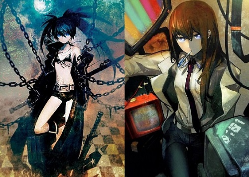
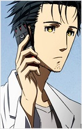
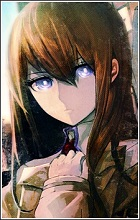
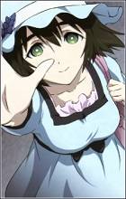
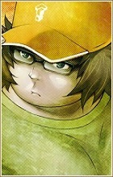

Genre/Thème : Science-Fiction, Voyage dans le temps, Thriller, Mystère, Drame, Romance, Comédie.
Steins;Gate est originellement un Visual Novel, un certain type de jeu-vidéo japonais.
En termes simplifiés, c'est un roman interactif, illustré en permanence, nous offrant le choix de ce que le protagoniste fait à certains moments, modifiant ainsi l'histoire.
Le jeu est développé par 5pb. et Nitroplus, et est sorti en Octobre 2009 sur Xbox 360, avant d'arriver sur PC en Aout 2010, puis sur d'autres plateformes ensuite.
Il est illustré par Huke, un célèbre dessinateur japonais possédant un style très particulier, reconnaissable notamment par les "particules" présentes sur ses œuvres, ainsi que par les yeux de ses personnages, semblables à des lentilles d'appareil photo.
Steins;Gate a été applaudi par les critiques et joueurs comme étant la crème de la crème des Visual Novels, possédant l'une des meilleures histoires de science-fiction, voyage dans le temps et thriller japonais.
Grâce à quoi, il a été adapté en un Animé de 24 épisodes par le studio WhiteFox en 2011, et est connu comme l'un des meilleurs Animés et adaptation de Visual Novel (Format dur à adapter en Animé) de tous les temps, étant actuellement classé 4ème avec un score de 9.09/10 sur la plateforme MyAnimeList.
Suite au succès de l'Animé, une "suite" du jeu original, intitulé "Steins;Gate 0" est sortie en Décembre 2015, qui à elle aussi eue droit à son Animé en 2018, toujours par WhiteFox.
J'ai bien écrit suite entre guillemets, étant donné que Steins;Gate 0 est la suite d'une fin alternatif de l'original, mais se déroulant avant le début de celui-ci... Perturbant, n'est-ce pas ?
Le succès retentissant des Animés a pousser les développeurs à faire une version "Elite" des deux jeux, retirant certains passages du scénario au profit d'ajouts de séquences directement tirées des Animés.
La version Elite de l'original est sortie en Septembre 2018, tandit que celle de 0 est toujours en développement.
Pour fêter les 10 ans du jeu original, plusieurs annonces ont été faîtes.
Elles incluent notamment un nouveau jeu servant de suite, ainsi qu'une adaptation en série télévisé américaine.
Les trois jeux sont disponible sur Steam ainsi que sur différents Stores virtuels.
Quant aux Animés, l'original est licencié par Netflix, mais semble partir et revenir de temps à autre, tandit que 0 est accessible sur Wakanim.
Il est bon de noter que Steins;Gate n'est en réalité qu'une partie d'une série bien plus grande, intitulé "Science Adventure Series", qui consiste en de multiples jeux-vidéos se déroulant dans le même univers fictif créé par 5pb. et Nitroplus.

Deux des dessins de Huke. À gauche se trouve Black Rock Shooter de la série éponyme, et à droite Kurisu de Steins;Gate.
Synopsis :
Okabe Rintarou est un jeune homme aimant se faire passer pour "Hououin Kyouma", un scientifique fou pourchassé par une organisation secrète voulant la fin du monde, causant ainsi l'amusement de ses proches.
Un jour, alors qu'il assiste à une conférence scientifique sur le voyage dans le temps, il découvre le corps sans vie de Makise Kurisu, une jeune prodige des sciences extrèmement connue pour ses théories innovantes sur de nombreux sujets, une véritable étoile montante du monde scientifique.
En envoyant un message à un de ses amis pour le prévenir de la nouvelle, il se retrouve téléporté dans une grande rue vide de monde, avant de reprendre conscience quelques minutes plus tard, avec certains phénomènes étranges s'étant passé entre-temps...
Pensant avoir perdu connaissance suite au choc, Okabe ne prête pas trop attention à ce qu'il lui est arrivé, jusqu'à ce qu'il remarque que ses souvenirs ne correspondent pas avec ceux de ses amis, et rencontre Makise Kurisu, bel et bien vivante.
Il découvre alors que, par pur hasard, lui et ses amis ont créé une machine à voyager dans le temps !
Jouissant de cet outil fascinant, Okabe et ses amis, qui seront également rejoints par Makise Kurisu, réaliseront de multiples expériences, jusqu'à ce qu'ils doivent en payer les conséquences...
L'Opening du jeu, illustrant un peu plus que celui de l'Animé. (Et puis je préfère cette musique-ci)
Personnages Principaux :
Rintarou Okabe

Le protagoniste de l'œuvre; il est surnommé "Okarin" par ses amis, un mélange de son nom et prénom.
Il se fait passer pour "Hououin Kyouma", un scientifique fou voulant assouvir le monde qui est traqué par une organisation secrète voulant la fin de celui-ci, prenant ainsi une attitude très théâtrale et excentrique, parlant même seul dans son téléphone éteint.
Okabe est socialement inapte, au point que Kurisu considère Mayuri, qui est lente d'esprit, comme quelqu'un de normal à côté de lui.
Il semble cependant réussir à surmonter ce handicap lors de situations dangereuses, le laissant paraître comme une personne attentionné.
Il est également intelligent, mais loin du niveau d'un génie tel que Kurisu, surtout que sa naïveté le bride.
Il est représenté en permanence avec une blouse blanche de scientifique, qu'il affectionne grandement.
Kurisu Makise

Deutéragoniste du récit; Kurisu est une jeune femme japonaise ayant fait ses études en Amérique.
Elle est une véritable génie des sciences ayant écrit de nombreuses thèses publiées dans divers magazines faisant le tour du monde, ce qui a fait d'elle une véritable
célébrité à la fois en Amérique et au Japon.
Dû à sa célébrité, Kurisu est souvent enviée par les personnes autour d'elle, la forçant à développer une personnalité forte et froide, lui causant de n'avoir que très peu d'amis.
L'étrangeté d'Okabe piquera sa curiosité, l'amenant à rejoindre son cercle d'amis.
Elle est une "tsundere", un cliché de personnalité japonais désignant les personnes qui ont honte de leurs sentiments affectueux, les poussant à les cacher sous un masque de colère et de froideur.
Mayuri Shiina

L'amie d'enfance d'Okabe; qui, tout comme lui, est surnommé par un mélange de son nom et prénom, donnant ainsi "Mayushii".
Mayuri est une jeune fille optimiste, très énergétique et appréciant la vie, qui a la particularité de saluer quelqu'un avec un jingle qui lui est propre : "Tuturuuu".
Étant un petit peu lente d'esprit, elle ne comprend pas vraiment ce que Okabe et Kurisu réalisent au cours de la série, mais aime être à leurs côtés.
Itaru Hashida

Un ami qu'Okabe s'est fait lorsqu'il était à l'université; il est également surnommé par un mélange de son nom et prénom : "Daru".
Itaru est un véritable otaku, préférant le virtuel au réel, et utilisant beaucoup de termes liés à cette communauté.
Il a aussi un niveau absolument démentiel en informatique, ce faisant ainsi appelé "Super Hacker" par Okabe, bien que la mauvaise prononciation de celui-ci l'énèrve.
Il démontre également une grande perversité, qui est utilisé comme gag récurrent durant la série.
Il est représenté en quasi-permanence devant son ordinateur.
Pourquoi j'aime cette œuvre :
1. Le concept de voyage dans le temps
Je suis un grand fan du concept du voyage dans le temps, et Steins;Gate va plus loin que la plupart en référencant des théories et personnalités réelles (Les étoiles à Neutrons, les champs de Tachyons...), faisant ainsi du récit l'un, si ce n'est le, plus plausible et crédible scientifiquement parlant.
Le fameux mythe de John Titor sera d'ailleurs le moteur de l'œuvre, utilisant très activement la quasi-totalité de ses théories, aussi bien sur la société dystopique que sur le voyage dans le temps.
Le scénariste de Steins;Gate en est d'ailleurs fier, déclarant que la science utilisé dans son histoire est probablement à 99% réelle.
Pour ceux qui ne connaissent pas John Titor, je vous invite vivement à faire un petit tour sur ce petit blog, reprenant les grandes lignes de l'affaire.
De plus, le récit contient certaines originalités, tel qu'une machine à voyager dans le temps sous forme de micro-onde, ce qui peut paraître absurde au premier abord, mais se révelera assez vraisemblable lorsque les explications scientifiques le concernant seront données plus tard dans le récit.
Ces originalités, couplées à la présence de nombreuses explications et expériences considérées comme théoriquement plausibles, font de Steins;Gate une expérience unique et enrichissante, qui ravit le fan de ce concept fascinant que je suis.
2. Le thriller
Aujourd'hui, Steins;Gate est surtout réputé pour son aspect thriller qui, de par son utilisation de voyages dans le temps, nous offre une histoire captivante et émouvante.
La lente découverte des conséquences de leurs actions brisera les personnages, surtout Okabe, dont le stress, la douleur et le désespoir sont incroyablement bien retranscrit.
Bien que se faisant passer pour un fameux scientifique fou, Okabe reste bel et bien un homme plus ou moins ordinaire, et se verra complètement dépassé par ce qu'il lui arrive, mais n'abandonnera pas et continuera de se battre contre le temps lui-même, faisant de son histoire un thriller incroyablement accrochant, émouvant et inoubliable.
Les points positifs et négatifs :
. La partie thriller, qui est captivante et émouvante.
. Les explications sur le voyage dans le temps, qui sont fascinantes et plausibles.
. Le doublage, qui est au top.
Surtout Mamoru Miyano, qui a fait une performance spectaculaire sur Okabe.
. La romance, qui est rafraîchissante.
De par leurs personnalités, la romance entre Okabe et Kurisu se marie très bien à la partie "tranche de vie", en plus d'augmenter le trouble de la partie thriller, devenant encore plus sentimentale.
. La musique, qui, dans la partie thriller, amplifie la tension.
Celle de la partie "tranche de vie" est cependant, je trouve, oubliable.
. L'Animation et le style de dessin, qui sont extrèmement constants.
Ils sont d'un bon niveau, sans pour autant être extraordinaires, mais ils sont très constants, donnant un très bon rendu.
. Dur à recommender à un néophyte, vu la quantité de références geek/otaku.
. Les bruitages de cigales, qui sont un petit peu trop nombreux.
Steins;Gate possède énormément de plans contenant des bruitages de cigales.
Ils sont réalistes, aidant ainsi à l'immersion d'un Akihabara représenté réalistiquement, mais sont, je trouve, agaçants.
Fort heureusement, ils disparaissent lors de la partie thriller, nous empêchant ainsi de nous sortir du récit.
. Les 12 premiers épisodes, qui sont très lents.
Prenant bien le temps de nous présenter les personnages, donner des explications sur le voyage dans le temps et montrer des expériences, les 12 premiers épisodes possèdent un rythme assez lents.
Steins;Gate est aujourd'hui réputé et vendu comme étant un thriller fascinant, causant beaucoup de spectateurs d'avoir du mal avec ces épisodes où "rien ne se passe", leurs donnant presque envie d'arrêter de regarder.
Personnellement, j'étais captivé par les explications et expériences de cette partie-ci, je ne me suis donc pas ennuyé une seule seconde, bien qu'il est bien vrai que j'ai préféré la partie thriller.
À noter que l'épisode 1 est intrigant, suivi des épisodes 2 à 11 qui sont bien plus lents, en passant par un épisode 9 qui nous laisse présager la suite, avant de tomber sur la fin du fameux épisodes 12, qui nous fait basculer dans le thriller.
. Le mélange des genres, qui est très, voir trop atypique.
Ce n'est pas pour rien si je parle de "partie" depuis tout à l'heure, les 12 premiers et les 12 derniers épisodes pouvant presque être désignés comme étant des séries différentes.
Les 12 premiers épisodes suivent le quotidien de personnages un petit peu fous découvrant le voyage dans le temps, nous offrant beaucoup de scènes d'humour, faisant de la série une "tranche de vie" humouristique avec un fond de science-fiction.
Les 12 derniers épisodes, quant à eux, suivent un Okabe dévasté par ses erreurs alors qu'il essaye de tout réparer, nous accordant ainsi un thriller phénoménal sur bases de science-fiction.
Bien que les 12 premiers épisodes semblent barbants pour beaucoup, ces personnes s'accordent à dire qu'ils sont un mal nécessaire nous permettant de connaitre les personnages, sans quoi les épisodes thriller n'auraient absolument aucun poids.
. Les personnages, qui sont presque tous des clichés ambulants.
Vocabulaire lié à la culture Animés/Japonais que je ne vais pas expliquer, mais entre le chuunibyou, le pervers geek, la tsundere, la fille tête en l'air kawaii, la cat-girl, etc, les personnages de Steins;Gate se noient dans les clichés, ce qui causera la lassitude de certains, bien que le contexte est différent des habituels, et que tous les personnages sont correctement développées plus tard.
. La fin, que beaucoup trouvent anti-climatique.
L'ordre de visionnage :
Animé VS Visual Novel
Tout d'abord : Animé ou Visual Novel ?
Pour l'original, l'Animé est une excellente adaptation, mais le Visual Novel contient nettement plus de détails, notamment sur les voyages dans le temps, permettant au fans de ce concept d'y trouver leur plaisir.
La présence de plusieurs fins, très tristes pour la plupart, sont également un plus.
Pour 0... j'en reparle juste après.
L'ordre :
Je vais commencer par donner l'ordre de visionnage, et j'expliquerais ensuite.
Steins;Gate
Steins;Gate : Oukoubakko no Poriomania
Steins;Gate Movie : Fuka Ryouiki no Déjà vu
Steins;Gate : Soumei Eichi no Cognitive Computing
Steins;Gate 23β : Kyoukaimenjou no Missing Link - Divide By Zero
Steins;Gate 0
Steins;Gate 0 : Kesshou Takei no Valentine - Bittersweet Intermedio
Oukoubakko no Poriomania est un OAV qui sert d'épisode 25/épilogue à la série, et Movie : Fuka Ryouiki no Déjà vu est un film se déroulant après le dit épilogue.
Ils sont tous les deux non-canon, mais sont tout de même extrèmement appréciables.
Ils sont cependant accessible légalement uniquement par coffret DVD Intégrale...
Soumei Eichi no Cognitive Computing consiste en 4 mini-épisodes de 3 minutes montrant des petits gags entre personnages.
Ils ne sont ni canon, ni licenciés.
23β : Kyoukaimenjou no Missing Link - Divide By Zero est un TV spécial qui montre une fin alternative à la série d'origine, nous projetant ainsi dans l'univers de 0.
Il possède cependant une petite particularité : C'est en réalité un prologue au Visual Novel de 0, et non de l'Animé.
On peut le voir en regardant les dates indiquées dans les épisodes. Mis à part cela, il n'y a pas de différence, et peut ainsi être utilisé comme un prologue à l'Animé de 0.
Il n'est pas licencié non-plus.
L'Animé de 0 possède une grosse particularité : Il est en réalité une suite au Visual Novel de 0.
Pour faire simple, le Visual Novel de 0 implique un grand nombre de boucles temporelles.
Pour éviter d'être trop répétitif, le jeu nous en montre quelque-unes, puis saute à la conclusion.
L'Animé montre la toute dernière boucle qui a été sauté, permettant de voir comment la conclusion a été atteinte par les personnages.
On peut tout à fait apprécier l'Animé sans avoir joué au jeu, mais la présence de non-explication quant à certains éléments pourront distraire les plus attentifs.
Ceux qui ont donc joué au jeu avant de regarder l'Animé auront une expérience bien plus complète.
Kesshou Takei no Valentine - Bittersweet Intermedio est un OAV réalisé pour fêter la Saint Valentin.
Il prend place quelque part entre le début de l'épisode 11 et la fin de l'épisode 13.
Il est disponible légalement uniquement en coffret DVD Intégrale.
Science Adventure Series
Comme je l'ai précisé bien plus haut, Steins;Gate fait en réalité partie d'une histoire bien plus grande, "Science Adventure Series", abrégée en "SciADV".
Cette histoire est constitué de différents jeux-vidéos se déroulant dans le même univers fictif, qui ont pour antagoniste le "Comité des 300", un regroupement de sociétés secrètes voulant assouvir le monde.
Le "Comité des 300" est d'ailleurs en réalité une théorie du complot existante dans notre monde à nous : Wikipedia Anglais.
Hormis cet antagoniste commun et quelques caméos de personnages, ces jeux n'ont pas de connexions directs, il n'est donc pas nécessaire de jouer aux autres pour comprendre l'un d'entre-eux.
Voici une liste des jeux :
Chaos;Head, et sa suite : Chaos;Child
Steins;Gate, sa "suite" : Steins;Gate 0, ainsi que sa suite : Steins;???
Robotics;Notes, et sa suite : Robotics;Notes Dash
Occultic;Nine
Anonymous;Code
J'en profite pour préciser que "Chaos;Head", "Child", "Robotics;Notes" et "Occultic;Nine" possèdent tous des adaptations Animés, qui sont cependant considérées comme étant très mauvaises, les jeux sont donc à prioriser.
Les jeux "Steins;???"" et "Anonymous;Code" ne sont pas encore sortis.